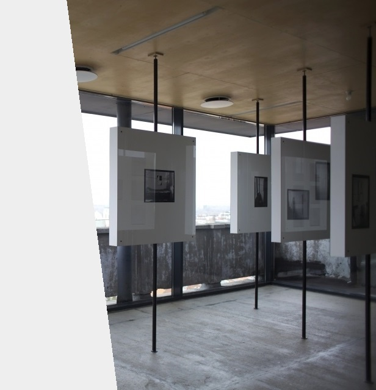

INSTYTUT AWANGARDY
⟵powrót
LISTA WYSTAW W INSTYTUCIE
- Paolo Thorsen-Nagel. Miejsce
19.07.2018
- Koji Kamoji. Modlitwa i Miasto
08–30.09.2017
- Tadeusz Rolke. E-K
18.09–21.11.2015
- CODZIENNIE OBECNY. Wystawa w ramach festiwalu WARSZAWA W BUDOWIE 6
12.10–09.11.2014
- Krzysztof Wojciechowski. KRESKI-PASKI-ROWKI
27.09–30.10.2013
- Mewa
25.10–17.11.2012
- Jan Głuszak Dagarama. Z trudu słońca
10.01–10.02.2012
- Finisaż wystawy Erna Rosenstein. Mogę powtarzać tylko nieświadomie
24.06.2011
- Erna Rosenstein. Mogę powtarzać tylko nieświadomie
13.05–02.07.2011

©Jakub Olsztyński